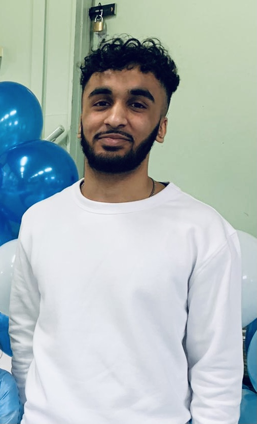

About me
Computer Science has always been a passion for me.
The sector has fascinated me since my interest in technology as a child. As I grew older
I took further interest into the many aspects of Computing such as Gaming, Animation and Website Design.
I am a current undergraduate student at
Queen Mary University of London studying a bachelor's degree in Computer Science.
What I plan to do with my degree is to integrate myself into the field of Software Engineering.
Within this field I am able to apply and also broaden my education even further on the sector.
Computer Science has always been a passion for me. The sector has fascinated me since my interest in technology as a child. As I grew older I took further interest into the many aspects of Computing such as Gaming, Animation and Website Design. I am a current undergraduate student at Queen Mary University of London studying a bachelor's degree in Computer Science. What I plan to do with my degree is to integrate myself into the field of Software Engineering. Within this field I am able to apply and also broaden my education even further on the sector.